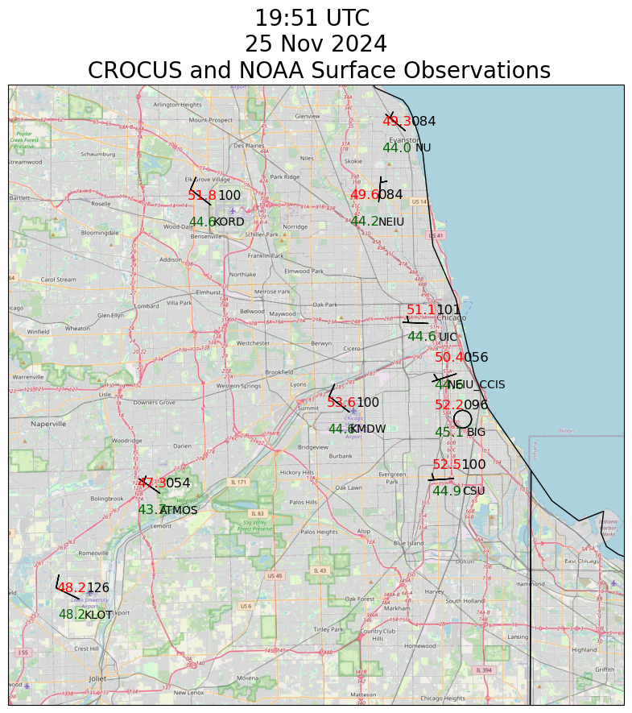

Plot Station Maps Combining CROCUS and NOAA Data#
Show code cell source
from PythonMETAR import Metar
import datetime
import cartopy.crs as ccrs
import cartopy.feature as cfeature
from cartopy.io.img_tiles import GoogleTiles, OSM
import metpy.calc as mpcalc
from metpy.calc import reduce_point_density, wind_components
from metpy.calc import dewpoint_from_relative_humidity, wet_bulb_temperature
from metpy.calc import altimeter_to_station_pressure
from metpy.units import units
from metpy.io import parse_metar_to_dataframe
from metpy.io import metar
from metpy.plots import current_weather, sky_cover, StationPlot
import sage_data_client
import matplotlib.pyplot as plt
import pandas as pd
import xarray as xr
Show code cell source
def pressure_to_altimeter(pressure, height):
pressure = pressure.to("hPa").m
height = height.to("m").m
return ((pressure - 0.3) * ((1 +(((1013.25 ** 0.190284) * 0.0065)/288) * (height / ((pressure - 0.3) ** 0.190284))) ** (1/0.190284)) * units.hPa).to("inHg")
Show code cell source
wxt_global_NEIU = {'conventions': "CF 1.10",
'site_ID' : "NEIU",
'CAMS_tag' : "CMS-WXT-002",
'datastream' : "CMS_wxt536_NEIU_a1",
'datalevel' : "a1",
"plugin" : "registry.sagecontinuum.org/jrobrien/waggle-wxt536:0.*",
'WSN' : 'W08D',
'latitude' : 41.9804526,
'longitude' : -87.7196038}
wxt_global_NU = {'conventions': "CF 1.10",
'WSN':'W099',
'site_ID' : "NU",
'CAMS_tag' : "CMS-WXT-005",
'datastream' : "CMS_wxt536_NU_a1",
'plugin' : "registry.sagecontinuum.org/jrobrien/waggle-wxt536:0.*",
'datalevel' : "a1",
'latitude' : 42.051469749,
'longitude' : -87.677667183}
wxt_global_CSU = {'conventions': "CF 1.10",
'WSN':'W08E',
'site_ID' : "CSU",
'CAMS_tag' : "CMS-WXT-003",
'datastream' : "CMS_wxt536_CSU_a1",
'plugin' : "local/waggle-wxt536",
'datalevel' : "a1",
'latitude' : 41.71996846,
'longitude' : -87.612805717}
wxt_global_ATMOS = {'conventions': "CF 1.10",
'WSN':'W0A4',
'site_ID' : "ATMOS",
'CAMS_tag' : "CMS-WXT-001",
'datastream' : "CMS_wxt536_ATMOS_a1",
'plugin' : "registry.sagecontinuum.org/jrobrien/waggle-wxt536:0.*",
'datalevel' : "a1",
'latitude' : 41.7016264,
'longitude' : -87.9956515}
wxt_global_UIC = {'conventions': "CF 1.10",
'WSN':'W096',
'site_ID' : "UIC",
'CAMS_tag' : "CMS-WXT-011",
'datastream' : "CMS_wxt536_UIC_a1",
'plugin' : "registry.sagecontinuum.org/jrobrien/waggle-wxt536:0.*",
'datalevel' : "a1",
'latitude' : 41.869407936,
'longitude' : -87.645806251}
wxt_global_CCIS = {'conventions': "CF 1.10",
'WSN':'W08B',
'site_ID' : "NEIU_CCIS",
'CAMS_tag' : "CMS-WXT-001",
'datastream' : "CMS_wxt536_NEIU_CCIS_a1",
'plugin' : "registry.sagecontinuum.org/jrobrien/waggle-wxt536:0.*",
'datalevel' : "a1",
'latitude' : 41.822966818,
'longitude' : -87.609655739}
wxt_global_BIG = {'conventions': "CF 1.10",
'WSN':'W0A0',
'site_ID' : "BIG",
'CAMS_tag' : "CMS-WXT-001",
'datastream' : "CMS_wxt536_BIG_a1",
'plugin' : "registry.sagecontinuum.org/jrobrien/waggle-wxt536:0.*",
'datalevel' : "a1",
'latitude' : 41.777038463,
'longitude' : -87.609755821}
var_attrs_wxt = {'temperature': {'standard_name' : 'air_temperature',
'units' : 'celsius'},
'humidity': {'standard_name' : 'relative_humidity',
'units' : 'percent'},
'dewpoint': {'standard_name' : 'dew_point_temperature',
'units' : 'celsius'},
'pressure': {'standard_name' : 'air_pressure',
'units' : 'hPa'},
'wind_mean_10s': {'standard_name' : 'wind_speed',
'units' : 'celsius'},
'wind_max_10s': {'standard_name' : 'wind_speed',
'units' : 'celsius'},
'wind_dir_10s': {'standard_name' : 'wind_from_direction',
'units' : 'degrees'},
'rainfall': {'standard_name' : 'precipitation_amount',
'units' : 'kg m-2'}}
Show code cell source
def ingest_wxt_latest(global_attrs, var_attrs):
# Access the last ten minutes of data
df_temp = sage_data_client.query(start="-10m",
filter={
"name" : 'wxt.env.temp|wxt.env.humidity|wxt.env.pressure|wxt.rain.accumulation',
"vsn" : global_attrs['WSN'],
"sensor" : "vaisala-wxt536"
}
)
winds = sage_data_client.query(start="-10m",
filter={
"name" : 'wxt.wind.speed|wxt.wind.direction',
"vsn" : global_attrs['WSN'],
"sensor" : "vaisala-wxt536"
}
)
hums = df_temp[df_temp['name']=='wxt.env.humidity']
temps = df_temp[df_temp['name']=='wxt.env.temp']
pres = df_temp[df_temp['name']=='wxt.env.pressure']
rain = df_temp[df_temp['name']=='wxt.rain.accumulation']
npres = len(pres)
nhum = len(hums)
ntemps = len(temps)
nrains = len(rain)
minsamps = min([nhum, ntemps, npres, nrains])
temps['time'] = pd.DatetimeIndex(temps['timestamp'].values)
vals = temps.set_index('time')[0:minsamps]
vals['temperature'] = vals.value.to_numpy()[0:minsamps]
vals['humidity'] = hums.value.to_numpy()[0:minsamps]
vals['pressure'] = pres.value.to_numpy()[0:minsamps]
vals['rainfall'] = rain.value.to_numpy()[0:minsamps]
direction = winds[winds['name']=='wxt.wind.direction']
speed = winds[winds['name']=='wxt.wind.speed']
nspeed = len(speed)
ndir = len(direction)
minsamps = min([nspeed, ndir])
speed['time'] = pd.DatetimeIndex(speed['timestamp'].values)
windy = speed.set_index('time')[0:minsamps]
windy['speed'] = windy.value.to_numpy()[0:minsamps]
windy['direction'] = direction.value.to_numpy()[0:minsamps]
winds10mean = windy.resample('10s').mean(numeric_only=True).ffill()
winds10max = windy.resample('10s').max(numeric_only=True).ffill()
dp = dewpoint_from_relative_humidity( vals.temperature.to_numpy() * units.degC,
vals.humidity.to_numpy() * units.percent)
vals['dewpoint'] = dp
vals10 = vals.resample('10s').mean(numeric_only=True).ffill() #ffil gets rid of nans due to empty resample periods
wb = wet_bulb_temperature(vals10.pressure.to_numpy() * units.hPa,
vals10.temperature.to_numpy() * units.degC,
vals10.dewpoint.to_numpy() * units.degC)
vals10['wetbulb'] = wb
vals10['wind_dir_10s'] = winds10mean['direction']
vals10['wind_mean_10s'] = winds10mean['speed']
vals10['wind_max_10s'] = winds10max['speed']
_ = vals10.pop('value')
vals10xr = xr.Dataset.from_dataframe(vals10)
vals10xr = vals10xr.sortby('time')
vals10xr = vals10xr.assign_attrs(global_attrs)
for varname in var_attrs.keys():
vals10xr[varname] = vals10xr[varname].assign_attrs(var_attrs[varname])
return vals10xr
Show code cell source
kord = parse_metar_to_dataframe(Metar('KORD').metar)
kmdw = parse_metar_to_dataframe(Metar('KMDW').metar)
klot = parse_metar_to_dataframe(Metar('KLOT').metar)
ds_list = []
station_ids = []
elevations = []
metars = pd.concat([kord, kmdw, klot])
try:
xNU = ingest_wxt_latest(wxt_global_NU, var_attrs_wxt).isel(time=-1)
xNU['latitude'] = xNU.attrs['latitude']
xNU['longitude'] = xNU.attrs['longitude']
xNU['site'] = 'NU'
elevations.append(187)
ds_list.append(xNU)
except:
pass
try:
xNEIU = ingest_wxt_latest(wxt_global_NEIU, var_attrs_wxt).isel(time=-1)
xNEIU['latitude'] = xNEIU.attrs['latitude']
xNEIU['longitude'] = xNEIU.attrs['longitude']
xNEIU['site'] = 'NEIU'
elevations.append(182)
ds_list.append(xNEIU)
except:
pass
try:
xUIC = ingest_wxt_latest(wxt_global_UIC, var_attrs_wxt).isel(time=-1)
xUIC['latitude'] = xUIC.attrs['latitude']
xUIC['longitude'] = xUIC.attrs['longitude']
xUIC['site'] = 'UIC'
elevations.append(181)
ds_list.append(xUIC)
except:
pass
try:
xATMOS = ingest_wxt_latest(wxt_global_ATMOS, var_attrs_wxt).isel(time=-1)
xATMOS['latitude'] = xATMOS.attrs['latitude']
xATMOS['longitude'] = xATMOS.attrs['longitude']
xATMOS['site'] = 'ATMOS'
elevations.append(231)
ds_list.append(xATMOS)
except:
pass
try:
xCSU = ingest_wxt_latest(wxt_global_CSU, var_attrs_wxt).isel(time=-1)
xCSU['latitude'] = xCSU.attrs['latitude']
xCSU['longitude'] = xCSU.attrs['longitude']
xCSU['site'] = 'CSU'
elevations.append(176)
ds_list.append(xCSU)
except:
pass
try:
xCCIS = ingest_wxt_latest(wxt_global_CCIS, var_attrs_wxt).isel(time=-1)
xCCIS['latitude'] = xCCIS.attrs['latitude']
xCCIS['longitude'] = xCCIS.attrs['longitude']
xCCIS['site'] = 'NEIU_CCIS'
elevations.append(176)
ds_list.append(xCCIS)
except:
pass
try:
xBIG = ingest_wxt_latest(wxt_global_BIG, var_attrs_wxt).isel(time=-1)
xBIG['latitude'] = xBIG.attrs['latitude']
xBIG['longitude'] = xBIG.attrs['longitude']
xBIG['site'] = 'BIG'
elevations.append(180)
ds_list.append(xBIG)
except:
pass
ds = xr.concat(ds_list, dim='site')
data = ds.to_dataframe()
data['station_id'] = list(ds.site.values)
data["elevation"] = elevations
# Compute altimeter and mslp values
data["altimeter"] = pressure_to_altimeter(data.pressure.values * units.hPa, 176 * units.meter)
data["mslp"] = mpcalc.altimeter_to_sea_level_pressure(data.altimeter.values * units.inHg,
data.elevation.values * units.meter,
data.temperature.values * units.degC).to("hPa")
Downloading file 'sfstns.tbl' from 'https://github.com/Unidata/MetPy/raw/v1.6.3/staticdata/sfstns.tbl' to '/home/runner/.cache/metpy/v1.6.3'.
Downloading file 'master.txt' from 'https://github.com/Unidata/MetPy/raw/v1.6.3/staticdata/master.txt' to '/home/runner/.cache/metpy/v1.6.3'.
Downloading file 'stations.txt' from 'https://github.com/Unidata/MetPy/raw/v1.6.3/staticdata/stations.txt' to '/home/runner/.cache/metpy/v1.6.3'.
Downloading file 'airport-codes.csv' from 'https://github.com/Unidata/MetPy/raw/v1.6.3/staticdata/airport-codes.csv' to '/home/runner/.cache/metpy/v1.6.3'.
---------------------------------------------------------------------------
TimeoutError Traceback (most recent call last)
File ~/miniconda3/envs/instrument-cookbooks-dev/lib/python3.10/site-packages/urllib3/connectionpool.py:536, in HTTPConnectionPool._make_request(self, conn, method, url, body, headers, retries, timeout, chunked, response_conn, preload_content, decode_content, enforce_content_length)
535 try:
--> 536 response = conn.getresponse()
537 except (BaseSSLError, OSError) as e:
File ~/miniconda3/envs/instrument-cookbooks-dev/lib/python3.10/site-packages/urllib3/connection.py:507, in HTTPConnection.getresponse(self)
506 # Get the response from http.client.HTTPConnection
--> 507 httplib_response = super().getresponse()
509 try:
File ~/miniconda3/envs/instrument-cookbooks-dev/lib/python3.10/http/client.py:1375, in HTTPConnection.getresponse(self)
1374 try:
-> 1375 response.begin()
1376 except ConnectionError:
File ~/miniconda3/envs/instrument-cookbooks-dev/lib/python3.10/http/client.py:318, in HTTPResponse.begin(self)
317 while True:
--> 318 version, status, reason = self._read_status()
319 if status != CONTINUE:
File ~/miniconda3/envs/instrument-cookbooks-dev/lib/python3.10/http/client.py:279, in HTTPResponse._read_status(self)
278 def _read_status(self):
--> 279 line = str(self.fp.readline(_MAXLINE + 1), "iso-8859-1")
280 if len(line) > _MAXLINE:
File ~/miniconda3/envs/instrument-cookbooks-dev/lib/python3.10/socket.py:717, in SocketIO.readinto(self, b)
716 try:
--> 717 return self._sock.recv_into(b)
718 except timeout:
File ~/miniconda3/envs/instrument-cookbooks-dev/lib/python3.10/ssl.py:1307, in SSLSocket.recv_into(self, buffer, nbytes, flags)
1304 raise ValueError(
1305 "non-zero flags not allowed in calls to recv_into() on %s" %
1306 self.__class__)
-> 1307 return self.read(nbytes, buffer)
1308 else:
File ~/miniconda3/envs/instrument-cookbooks-dev/lib/python3.10/ssl.py:1163, in SSLSocket.read(self, len, buffer)
1162 if buffer is not None:
-> 1163 return self._sslobj.read(len, buffer)
1164 else:
TimeoutError: The read operation timed out
The above exception was the direct cause of the following exception:
ReadTimeoutError Traceback (most recent call last)
File ~/miniconda3/envs/instrument-cookbooks-dev/lib/python3.10/site-packages/requests/adapters.py:667, in HTTPAdapter.send(self, request, stream, timeout, verify, cert, proxies)
666 try:
--> 667 resp = conn.urlopen(
668 method=request.method,
669 url=url,
670 body=request.body,
671 headers=request.headers,
672 redirect=False,
673 assert_same_host=False,
674 preload_content=False,
675 decode_content=False,
676 retries=self.max_retries,
677 timeout=timeout,
678 chunked=chunked,
679 )
681 except (ProtocolError, OSError) as err:
File ~/miniconda3/envs/instrument-cookbooks-dev/lib/python3.10/site-packages/urllib3/connectionpool.py:843, in HTTPConnectionPool.urlopen(self, method, url, body, headers, retries, redirect, assert_same_host, timeout, pool_timeout, release_conn, chunked, body_pos, preload_content, decode_content, **response_kw)
841 new_e = ProtocolError("Connection aborted.", new_e)
--> 843 retries = retries.increment(
844 method, url, error=new_e, _pool=self, _stacktrace=sys.exc_info()[2]
845 )
846 retries.sleep()
File ~/miniconda3/envs/instrument-cookbooks-dev/lib/python3.10/site-packages/urllib3/util/retry.py:474, in Retry.increment(self, method, url, response, error, _pool, _stacktrace)
473 if read is False or method is None or not self._is_method_retryable(method):
--> 474 raise reraise(type(error), error, _stacktrace)
475 elif read is not None:
File ~/miniconda3/envs/instrument-cookbooks-dev/lib/python3.10/site-packages/urllib3/util/util.py:39, in reraise(tp, value, tb)
38 raise value.with_traceback(tb)
---> 39 raise value
40 finally:
File ~/miniconda3/envs/instrument-cookbooks-dev/lib/python3.10/site-packages/urllib3/connectionpool.py:789, in HTTPConnectionPool.urlopen(self, method, url, body, headers, retries, redirect, assert_same_host, timeout, pool_timeout, release_conn, chunked, body_pos, preload_content, decode_content, **response_kw)
788 # Make the request on the HTTPConnection object
--> 789 response = self._make_request(
790 conn,
791 method,
792 url,
793 timeout=timeout_obj,
794 body=body,
795 headers=headers,
796 chunked=chunked,
797 retries=retries,
798 response_conn=response_conn,
799 preload_content=preload_content,
800 decode_content=decode_content,
801 **response_kw,
802 )
804 # Everything went great!
File ~/miniconda3/envs/instrument-cookbooks-dev/lib/python3.10/site-packages/urllib3/connectionpool.py:538, in HTTPConnectionPool._make_request(self, conn, method, url, body, headers, retries, timeout, chunked, response_conn, preload_content, decode_content, enforce_content_length)
537 except (BaseSSLError, OSError) as e:
--> 538 self._raise_timeout(err=e, url=url, timeout_value=read_timeout)
539 raise
File ~/miniconda3/envs/instrument-cookbooks-dev/lib/python3.10/site-packages/urllib3/connectionpool.py:369, in HTTPConnectionPool._raise_timeout(self, err, url, timeout_value)
368 if isinstance(err, SocketTimeout):
--> 369 raise ReadTimeoutError(
370 self, url, f"Read timed out. (read timeout={timeout_value})"
371 ) from err
373 # See the above comment about EAGAIN in Python 3.
ReadTimeoutError: HTTPSConnectionPool(host='raw.githubusercontent.com', port=443): Read timed out. (read timeout=30)
During handling of the above exception, another exception occurred:
ReadTimeout Traceback (most recent call last)
Cell In[5], line 1
----> 1 kord = parse_metar_to_dataframe(Metar('KORD').metar)
2 kmdw = parse_metar_to_dataframe(Metar('KMDW').metar)
3 klot = parse_metar_to_dataframe(Metar('KLOT').metar)
File ~/miniconda3/envs/instrument-cookbooks-dev/lib/python3.10/site-packages/metpy/io/metar.py:106, in parse_metar_to_dataframe(metar_text, year, month)
81 @exporter.export
82 def parse_metar_to_dataframe(metar_text, *, year=None, month=None):
83 """Parse a single METAR report into a Pandas DataFrame.
84
85 Takes a METAR string in a text form, and creates a `pandas.DataFrame` including the
(...)
104
105 """
--> 106 return _metars_to_dataframe([metar_text], year=year, month=month)
File ~/miniconda3/envs/instrument-cookbooks-dev/lib/python3.10/site-packages/metpy/io/metar.py:445, in _metars_to_dataframe(metar_iter, year, month)
442 for metar in metar_iter:
443 with contextlib.suppress(ParseError):
444 # Parse the string of text and assign to values within the named tuple
--> 445 metars.append(parse_metar(metar, year=year, month=month))
447 # Take the list of Metar objects and turn it into a DataFrame with appropriate columns
448 df = pd.DataFrame(metars)
File ~/miniconda3/envs/instrument-cookbooks-dev/lib/python3.10/site-packages/metpy/io/metar.py:178, in parse_metar(metar_text, year, month, station_metadata)
176 # Extract the latitude and longitude values from 'master' dictionary
177 try:
--> 178 info = station_metadata[station_id]
179 lat = info.latitude
180 lon = info.longitude
File ~/miniconda3/envs/instrument-cookbooks-dev/lib/python3.10/site-packages/metpy/io/station_data.py:156, in StationLookup.__getitem__(self, stid)
154 """Lookup station information from the ID."""
155 try:
--> 156 return self.tables[stid]
157 except KeyError:
158 raise KeyError(f'No station information for {stid}') from None
File ~/miniconda3/envs/instrument-cookbooks-dev/lib/python3.10/functools.py:981, in cached_property.__get__(self, instance, owner)
979 val = cache.get(self.attrname, _NOT_FOUND)
980 if val is _NOT_FOUND:
--> 981 val = self.func(instance)
982 try:
983 cache[self.attrname] = val
File ~/miniconda3/envs/instrument-cookbooks-dev/lib/python3.10/site-packages/metpy/io/station_data.py:143, in StationLookup.tables(self)
137 @cached_property
138 def tables(self):
139 """Return an iterable mapping combining all the tables."""
140 return ChainMap(dict(_read_station_table()),
141 dict(_read_master_text_file()),
142 dict(_read_station_text_file()),
--> 143 dict(_read_airports_file()))
File ~/miniconda3/envs/instrument-cookbooks-dev/lib/python3.10/site-packages/metpy/io/station_data.py:113, in _read_airports_file(input_file)
111 """Read the airports file."""
112 if input_file is None:
--> 113 input_file = get_test_data('airport-codes.csv', as_file_obj=False)
114 df = pd.read_csv(input_file)
115 return pd.DataFrame({'id': df.ident.values, 'synop_id': 99999,
116 'latitude': df.latitude_deg.values,
117 'longitude': df.longitude_deg.values,
(...)
120 'source': input_file
121 }).to_dict()
File ~/miniconda3/envs/instrument-cookbooks-dev/lib/python3.10/site-packages/metpy/cbook.py:34, in get_test_data(fname, as_file_obj, mode)
32 def get_test_data(fname, as_file_obj=True, mode='rb'):
33 """Access a file from MetPy's collection of test data."""
---> 34 path = POOCH.fetch(fname)
35 # If we want a file object, open it, trying to guess whether this should be binary mode
36 # or not
37 if as_file_obj:
File ~/miniconda3/envs/instrument-cookbooks-dev/lib/python3.10/site-packages/pooch/core.py:589, in Pooch.fetch(self, fname, processor, downloader, progressbar)
586 if downloader is None:
587 downloader = choose_downloader(url, progressbar=progressbar)
--> 589 stream_download(
590 url,
591 full_path,
592 known_hash,
593 downloader,
594 pooch=self,
595 retry_if_failed=self.retry_if_failed,
596 )
598 if processor is not None:
599 return processor(str(full_path), action, self)
File ~/miniconda3/envs/instrument-cookbooks-dev/lib/python3.10/site-packages/pooch/core.py:807, in stream_download(url, fname, known_hash, downloader, pooch, retry_if_failed)
803 try:
804 # Stream the file to a temporary so that we can safely check its
805 # hash before overwriting the original.
806 with temporary_file(path=str(fname.parent)) as tmp:
--> 807 downloader(url, tmp, pooch)
808 hash_matches(tmp, known_hash, strict=True, source=str(fname.name))
809 shutil.move(tmp, str(fname))
File ~/miniconda3/envs/instrument-cookbooks-dev/lib/python3.10/site-packages/pooch/downloaders.py:220, in HTTPDownloader.__call__(self, url, output_file, pooch, check_only)
218 # pylint: enable=consider-using-with
219 try:
--> 220 response = requests.get(url, timeout=timeout, **kwargs)
221 response.raise_for_status()
222 content = response.iter_content(chunk_size=self.chunk_size)
File ~/miniconda3/envs/instrument-cookbooks-dev/lib/python3.10/site-packages/requests/api.py:73, in get(url, params, **kwargs)
62 def get(url, params=None, **kwargs):
63 r"""Sends a GET request.
64
65 :param url: URL for the new :class:`Request` object.
(...)
70 :rtype: requests.Response
71 """
---> 73 return request("get", url, params=params, **kwargs)
File ~/miniconda3/envs/instrument-cookbooks-dev/lib/python3.10/site-packages/requests/api.py:59, in request(method, url, **kwargs)
55 # By using the 'with' statement we are sure the session is closed, thus we
56 # avoid leaving sockets open which can trigger a ResourceWarning in some
57 # cases, and look like a memory leak in others.
58 with sessions.Session() as session:
---> 59 return session.request(method=method, url=url, **kwargs)
File ~/miniconda3/envs/instrument-cookbooks-dev/lib/python3.10/site-packages/requests/sessions.py:589, in Session.request(self, method, url, params, data, headers, cookies, files, auth, timeout, allow_redirects, proxies, hooks, stream, verify, cert, json)
584 send_kwargs = {
585 "timeout": timeout,
586 "allow_redirects": allow_redirects,
587 }
588 send_kwargs.update(settings)
--> 589 resp = self.send(prep, **send_kwargs)
591 return resp
File ~/miniconda3/envs/instrument-cookbooks-dev/lib/python3.10/site-packages/requests/sessions.py:724, in Session.send(self, request, **kwargs)
721 if allow_redirects:
722 # Redirect resolving generator.
723 gen = self.resolve_redirects(r, request, **kwargs)
--> 724 history = [resp for resp in gen]
725 else:
726 history = []
File ~/miniconda3/envs/instrument-cookbooks-dev/lib/python3.10/site-packages/requests/sessions.py:724, in <listcomp>(.0)
721 if allow_redirects:
722 # Redirect resolving generator.
723 gen = self.resolve_redirects(r, request, **kwargs)
--> 724 history = [resp for resp in gen]
725 else:
726 history = []
File ~/miniconda3/envs/instrument-cookbooks-dev/lib/python3.10/site-packages/requests/sessions.py:265, in SessionRedirectMixin.resolve_redirects(self, resp, req, stream, timeout, verify, cert, proxies, yield_requests, **adapter_kwargs)
263 yield req
264 else:
--> 265 resp = self.send(
266 req,
267 stream=stream,
268 timeout=timeout,
269 verify=verify,
270 cert=cert,
271 proxies=proxies,
272 allow_redirects=False,
273 **adapter_kwargs,
274 )
276 extract_cookies_to_jar(self.cookies, prepared_request, resp.raw)
278 # extract redirect url, if any, for the next loop
File ~/miniconda3/envs/instrument-cookbooks-dev/lib/python3.10/site-packages/requests/sessions.py:703, in Session.send(self, request, **kwargs)
700 start = preferred_clock()
702 # Send the request
--> 703 r = adapter.send(request, **kwargs)
705 # Total elapsed time of the request (approximately)
706 elapsed = preferred_clock() - start
File ~/miniconda3/envs/instrument-cookbooks-dev/lib/python3.10/site-packages/requests/adapters.py:713, in HTTPAdapter.send(self, request, stream, timeout, verify, cert, proxies)
711 raise SSLError(e, request=request)
712 elif isinstance(e, ReadTimeoutError):
--> 713 raise ReadTimeout(e, request=request)
714 elif isinstance(e, _InvalidHeader):
715 raise InvalidHeader(e, request=request)
ReadTimeout: HTTPSConnectionPool(host='raw.githubusercontent.com', port=443): Read timed out. (read timeout=30)
Show code cell source
# Set up the map projection
proj = ccrs.LambertConformal(central_longitude=-95, central_latitude=35,
standard_parallels=[35])
# Use the Cartopy map projection to transform station locations to the map and
# then refine the number of stations plotted by setting a 300km radius
point_locs = proj.transform_points(ccrs.PlateCarree(), data['longitude'].values,
data['latitude'].values)
fig = plt.figure(figsize=(20, 10))
tiler = OSM()
mercator = tiler.crs
#add_metpy_logo(fig, 1100, 300, size='large')
ax = fig.add_subplot(1, 1, 1, projection=mercator)
# Add some various map elements to the plot to make it recognizable.
ax.add_feature(cfeature.LAND)
ax.add_feature(cfeature.OCEAN)
#ax.add_feature(cfeature.NaturalEarthFeature("physical", "land", "10m"),
# ec="red", fc="yellow", lw=2, alpha=0.4)
#ax.add_feature(cfeature.LAKES)
ax.add_feature(cfeature.COASTLINE)
ax.add_feature(cfeature.STATES)
ax.add_feature(cfeature.BORDERS)
ax.add_image(tiler, 11)
# Set plot bounds
ax.set_extent((-88.2, -87.4, 41.5, 42.1))
#
# Here's the actual station plot
#
# Start the station plot by specifying the axes to draw on, as well as the
# lon/lat of the stations (with transform). We also the fontsize to 12 pt.
stationplot = StationPlot(ax, data['longitude'].values, data['latitude'].values,
clip_on=True, transform=ccrs.PlateCarree(), fontsize=12)
stationplot.plot_parameter('NW', (data['temperature'].values * units.degC).to("degF"), color='red', formatter = '0.1f')
stationplot.plot_parameter('SW', (data['dewpoint'].values * units.degC).to("degF"),
color='darkgreen', formatter = '0.1f')
stationplot.plot_parameter('NE', data['mslp'].values,
formatter=lambda v: format(10 * v, '.0f')[-3:])
ew, nw = wind_components((data['wind_mean_10s'].values * units.meter_per_second).to("knot") ,
data['wind_dir_10s'].values * units.degrees_north)
stationplot.plot_barb(ew, nw)
stationplot.plot_text('SE', data['station_id'].values, fontsize=10)
stationplot_metars = StationPlot(ax, metars['longitude'].values, metars['latitude'].values,
clip_on=True, transform=ccrs.PlateCarree(), fontsize=12)
stationplot_metars.plot_parameter('NW', (metars['air_temperature'].values * units.degC).to("degF"), color='red', formatter = '0.1f')
stationplot_metars.plot_parameter('SW', (metars['dew_point_temperature'].values * units.degC).to("degF"),
fontsize=11,
color='darkgreen', formatter = '0.1f')
stationplot_metars.plot_parameter('NE', metars['air_pressure_at_sea_level'].values,
fontsize=11,
formatter=lambda v: format(10 * v, ' .0f')[-3:])
ew, nw = wind_components(metars['wind_speed'].values * units.knot ,
metars['wind_direction'].values * units.degrees_north)
stationplot_metars.plot_barb(ew, nw)
stationplot_metars.plot_text('SE', metars['station_id'].values, fontsize=10)
plt.title(pd.to_datetime(data.time.values[0]).strftime("%H:%M UTC \n %d %b %Y \n CROCUS and NOAA Surface Observations"), fontsize=20)
plt.savefig("current-conditions-crocus.png", dpi=300)
